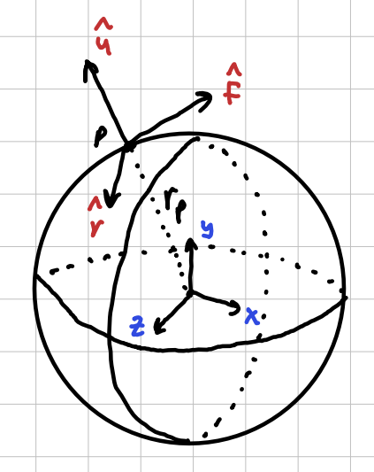
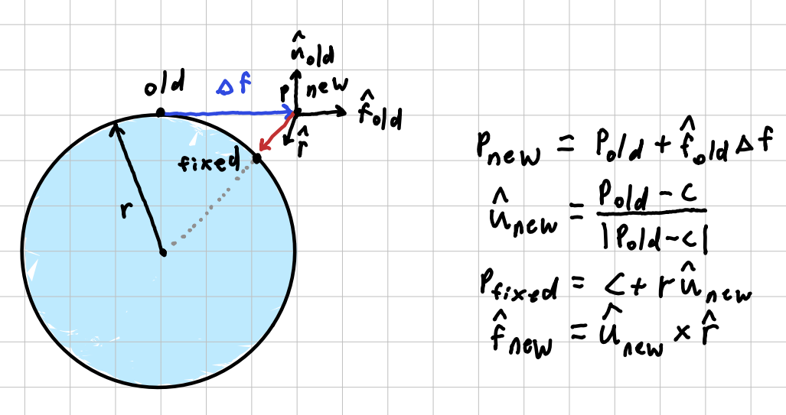
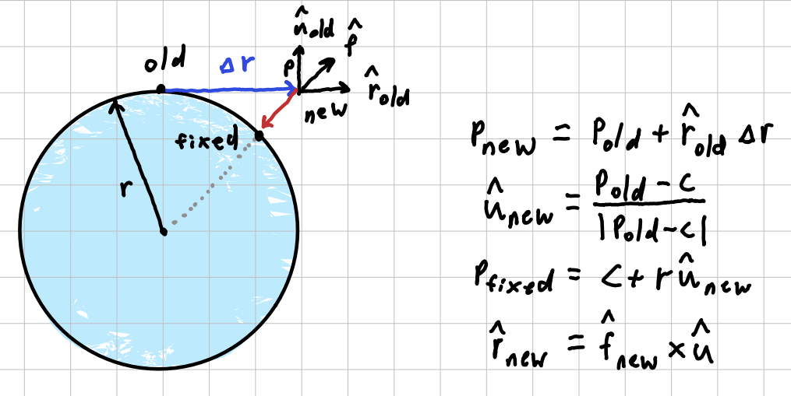
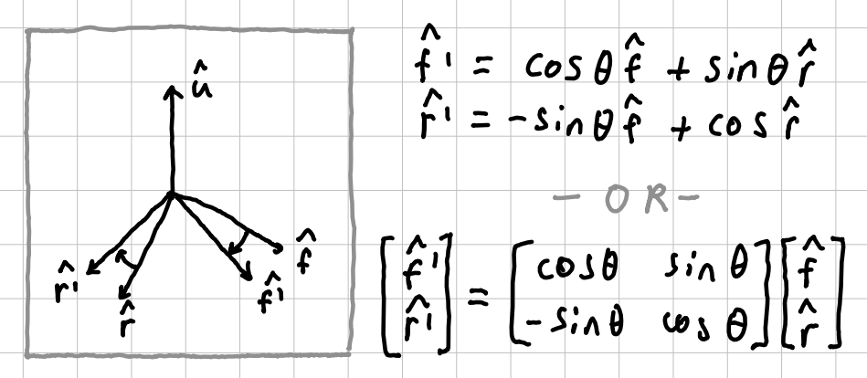
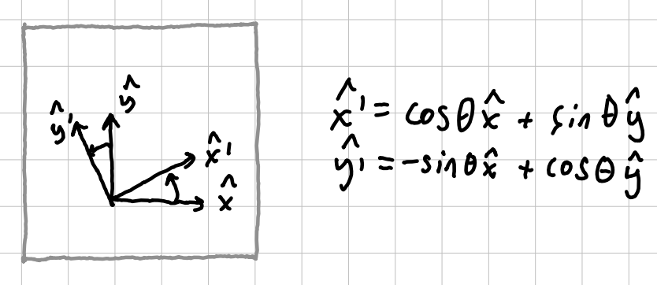

This project is less of a game(for now) and more of an experiment using a coordinate system oriented around a sphere.
First we need to set up the coordinate systems. To simplify the calculations, the player will store its local system. The player position will snap to stay at least some r away from the planet centre. I store this using the forward, up, and right basis vectors.

This local system requires some maintenance when the player moves. To ensure the vectors remain independent, we need to do some bookkeeping when walking/strafing. To walk, we first displace along the fwd vector, recalculate the up vector, fix the position to the sphere, then update the fwd vector to remain tangency:

Similarly, To strafe, we first displace along the rgt vector, recalculate the up vector, fix the position to the sphere, then update the rgt vector to remain tangency:

Notice when walking, the right vector does not change. Also notice when strafing, the forward vector does not change. This saves us some mind effort!
Now we just need to handle rotation about the up axis. During this transform, the up vector does not change. We can use somewhat of a rotation matrix to use the old components to find these new ones:

This was easy to find out one I realized the transform is more or less analogous the 2d rotation:

Fin.